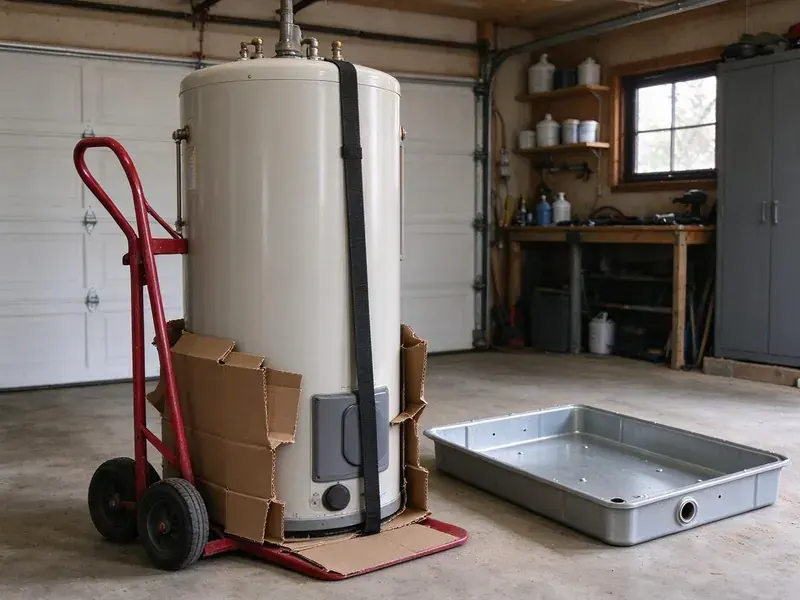

Sewage Ejector Pump Installation in North Las Vegas, NV
Pump running nonstop? FMR Plumbing diagnoses and replaces ejector pumps across North Las Vegas, NV.
- Written Quotes
- High Water Alarms
- Local Crews
- Check Valve and Shutoff

A Basement Bathroom That Drains Right in North Las Vegas, NV
We pull the permit, set the basin and wire the alarm.
Sewage Ejector Pump Installation in North Las Vegas, NV
FMR Plumbing installs sewage ejector pumps in North Las Vegas, NV for any toilet, shower or sink that sits below the main sewer line, where gravity simply cannot move waste out of the house. Everything drains to a sealed pit. A float kicks the pump on as the level rises, sending waste up a two-inch line to the main drain. Then it shuts off.
Work we handle every week:
- Proper electrical and float settings for new pumps
- Discharge valve setups
- Basin sizing and venting for new systems

Additional Plumbing Installation Services in North Las Vegas, NV
We install water heaters, pumps, lines, and fixtures across North Las Vegas, NV with precision workmanship that meets every local code.


Customers
Why Choose FMR Plumbing for Sewage Ejector Pump Installation in North Las Vegas, NV?
Ejector pumps move raw waste, so a sloppy install shows up as odors, backups and expensive cleanup. We seal the lid with gaskets at every penetration, vent the basin through the roof and install a check valve so waste in the discharge line cannot drain back into the pit after each cycle. Sewer gas stays out.
- Local Crews, Our plumbers know local inspections and plan for them.
- Proven Brands, Zoeller and Liberty pumps with long track records.
- System Sizing, Pumps are sized by lift and run, not a rule of thumb.
Citywide Coverage
Our crews cover North Las Vegas end to end and the towns around it. Older homes often have a high sewer exit in the basement, and newer homes on slopes tend to have walkout levels below the street main. We check for both.
Experienced Team
Every plumber at FMR Plumbing handles both installs and repairs. Someone who swaps a float one day may set a full basement bath the next week, so they know how layout choices become easy or hard service calls later. It shows in the work.
Safety-First Approach
Safety and code compliance start with the vent on every ejector install we do in North Las Vegas. Sewage basins make methane and hydrogen sulfide, so we seal the lid with gaskets at every pipe and cord, vent the basin through the roof and make sure the vent ties in where the code allows. Sewer gas stays out.
Trusted Certified North Las Vegas Plumbing Services Professionals
At FMR Plumbing, we are proud to offer certified plumbing services throughout North Las Vegas, NV. Credentials matter in this trade. Our plumbers hold recognized industry credentials, and they follow strict safety and quality rules on every repair, installation and maintenance call we run.
Call Us Now PHCC Plumbing Contractor Recognition
PHCC Plumbing Contractor Recognition Better Business Bureau (BBB) Accreditation
Better Business Bureau (BBB) Accreditation Angi Certified Pro
Angi Certified Pro ISO 9001 Quality Management Certification
ISO 9001 Quality Management CertificationEjector Pump Jobs We Handle in North Las Vegas, NV
New Construction Sewage Ejector Pump Installation in North Las Vegas, NV
On a new build, the basin goes in before the slab is poured. With no concrete to cut, it costs the least then, and we stub drains, vent and discharge to the plans for a clean rough-in inspection. It keeps the pour on schedule.

Ejector Pump Alarms and Backup Options in North Las Vegas
A high water alarm should be on any ejector basin, since a pump failure can lead to a sewage backup quickly. Audible alarms on their own power or Wi-Fi alarms that text you give warning while the pit is still filling, not after waste reaches the floor. Snowmelt in the northern mountains can raise groundwater in spring, which can affect basements and low-lying properties. Battery backup is an option.
Sewage Ejector Pump Basin Installation in North Las Vegas, NV
The basin holds everything, and a 30-gallon size is common for a single basement bathroom. A larger basin means longer, less frequent cycles that spare the motor and switch, so we go bigger when the pit takes a laundry or several fixtures. Lids must be gas-tight.
Liberty Pumps Installation in North Las Vegas
Liberty ejector pumps show up on a lot of our installs, with cast iron bodies and two-inch solids handling on most sewage models. Their packaged systems come with the basin, lid, pump and check valve matched together, which cuts down on field fitting and gives the inspector a clean, listed assembly to look at. We still add a shutoff.
Residential Sewage Ejector Pump Installation in North Las Vegas
Residential ejector systems in North Las Vegas serve basement bathrooms, lower-level suites and any fixture that sits too low to drain by gravity to the sewer. The setup is a sealed basin, a pump, a float switch, a check valve and a vent. Simple parts, exact install. Most problems come from the install, not the hardware, so we take our time on the vent and the lid seal.
Emergency Ejector Pump Replacement in North Las Vegas, NV
A dead ejector pump takes every below-grade fixture out of service until it is fixed. Stop using those fixtures, including the washer if it drains to the pit, then call (725) 360-1766 and we will try to get a plumber and a replacement pump to you that day. Replacements are often quick.
Duplex and Commercial Ejector Systems in North Las Vegas, NV
Commercial buildings, multi-unit properties and busy homes may need two-pump setups with an alternating control panel. The panel switches the lead pump each cycle so wear is shared, and if the lead pump fails or the flow is heavy, the second pump starts automatically and the panel trips an alarm so someone knows to call for service. Two pumps, one alarm.

Commercial Sewage Ejector Pump Installation in North Las Vegas, NV
Businesses in North Las Vegas, NV with restrooms, kitchens or break rooms below grade need ejector systems that keep up with heavier, steadier use than a house. Commercial setups often run duplex pumps with an alternating panel, so one pump can fail and the other keeps the restrooms open. Downtime costs money. We size both pumps to carry the full load.
Ejector Pump Plumbers Near You in North Las Vegas, NV
Searching for an ejector plumber nearby in North Las Vegas usually means the alarm is going off or the basement drains stopped. FMR Plumbing is local, so a plumber with a pump can often reach you that day, and the same person who diagnoses it installs it. Nobody subcontracts it. One plumber, start to finish.
Our plumbers know the permit routine in North Las Vegas, NV, which keeps new ejector systems on schedule. New basins need a rough-in inspection with the vent and drains exposed, so we time the concrete patch around the inspector's visit rather than pouring early and cutting it back open. That usually saves a day.
FMR Plumbing at a Glance
- Licensed and insured plumbers serving North Las Vegas, NV
- 24/7 emergency service with same-day scheduling
- Clear written estimates, no hidden fees
- 4.8-star rated by 903+ Nevada customers
North Las Vegas Map
North Las Vegas Information
- Population
- 284,771
- Area codes
- 702/725/775
- Service area
- North Las Vegas and towns within a 40 mile drive
- Nearby
- Sunrise Manor, Las Vegas, Winchester, Whitney
Most ejector pumps last 7 to 10 years, and a high water alarm is the cheapest way to hear about a failure before the floor does.
Expert Services
Reach out to FMR Plumbing for honest, reliable plumbing from people who know the trade in North Las Vegas, NV.
Our Specialized Plumbing Services in North Las Vegas, NV
At FMR Plumbing, we handle the full list of plumbing services across North Las Vegas, NV. From leak detection to full system installs, our team works fast and charges fair prices on homes and commercial properties alike. Take a look at our core services below:


How We Handle an Ejector Pump Install in North Las Vegas, NV
Sealed basin, roof vent, alarm. Here is the order.
Request a Quote
Call (725) 360-1766 or fill out our form to set up a visit. Expect a couple of quick questions.
Assessment
In your North Las Vegas home, a plumber measures the lift and run and maps the vent. We also find the best basin spot.
Installation
We cut the floor if needed, set the basin and install the pump. Every connection is sealed and tested.
Frequently Asked Questions About Sewage Ejector Pump Installation in North Las Vegas
Ejector installs in North Las Vegas usually run $2,500 to $5,000. A new basin, the amount of slab cutting, the vent run to the roof and the electrical work are what push a job toward one end or the other. We price it after a visit.
Zoeller, Liberty, Wayne and Grundfos are all brands we install. We go over power, solids handling and warranty with you.
Manufacturer warranties typically range from 1 to 5 years, by model. Our labor is covered separately.
Usually, yes. New systems typically need a permit and an inspection before the slab is patched. We handle both.
Rarely, because basins, vents, wiring and permits are all part of it. Mistakes can cause sewer gas leaks or backups.
Many residential jobs can, especially replacements. A new system with floor cutting may need a second day and a patch after inspection.
Sump pumps remove groundwater and seepage, while ejectors handle sewage from fixtures. Ejectors pass solids and sit in sealed, vented basins.
We warranty our labor with a written guarantee, and the pump carries the manufacturer's warranty. Terms are spelled out on the quote.
What Our Customers Say About Our Plumbing Experts

Greg S.
I manage a small strip center with six tenants. FMR Plumbing handles our annual backflow testing and fixed a recurring clog in the shared sewer line that had been backing into the nail salon. Their reports come in clean and on time.
Commercial Plumbing · Spring Valley, NV
Kevin O.
Before buying our house I paid for a sewer camera inspection. FMR Plumbing found a belly in the line that held standing water about forty feet from the cleanout. We used the video to get the sellers to fix it before closing.
Sewer Camera Inspection · North Las Vegas, NVMark T.
The floor drain in our office break room backed up every few weeks. The plumber ran a cable, then put a camera down and found roots at a joint about thirty feet out. Seeing it on the screen made the decision easy.
Drain Cleaning · Las Vegas, NV
Patricia H.
We had a slab leak that two other companies could not find. FMR Plumbing located it in under an hour with a listening device. They rerouted the line through the attic instead of breaking up the floor, so we kept our kitchen tile.
Slab Leak Repair · Spring Valley, NV
Rachel N.
Hard water was leaving white crust on every faucet and our dishwasher was struggling. The tech tested the water, recommended a softener sized for a family of five, and installed it with a bypass valve in one afternoon. The spots on our glasses are gone.
Water Softener · Whitney, NVJames P.
Our restaurant had a slow leak at the hand sink that was rotting the cabinet base. FMR Plumbing came in at six in the morning before prep, replaced the trap and both supply lines, and was packed up before my first cook clocked in.
Commercial Plumbing · Sunrise Manor, NV